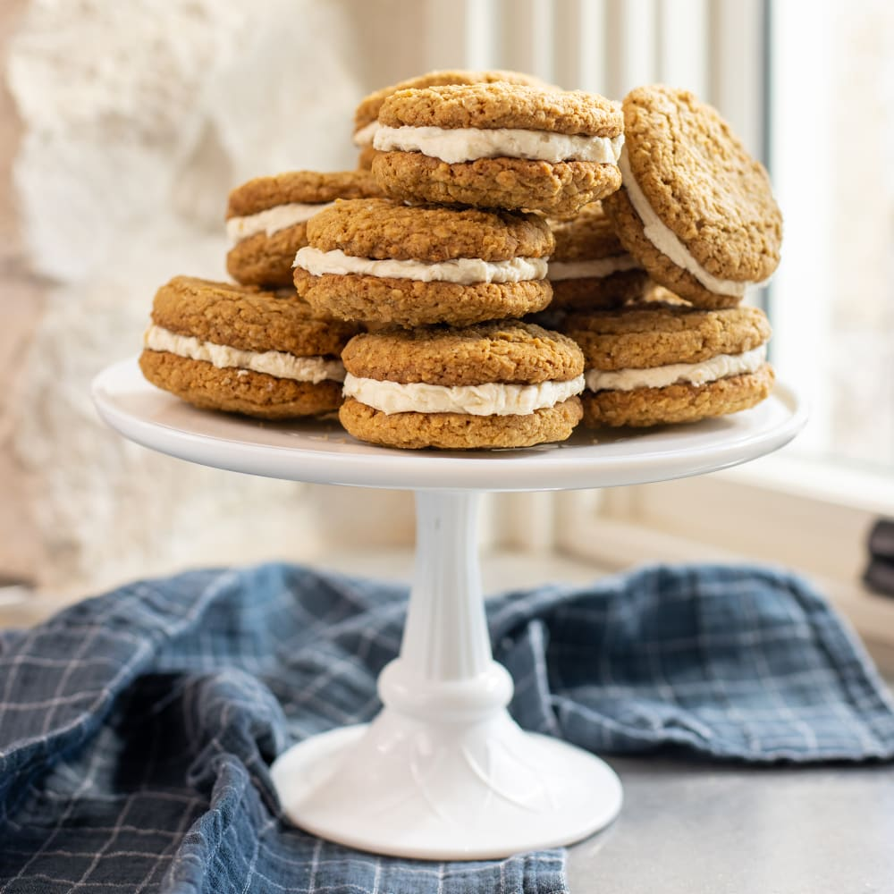

Oatmeal Cream Pies

Description
Total 2 hours. Active 45 mins. Makes 15 sandwich cookies
Ingredients
- 1 1/4 cups (2 1/2 sticks) unsalted butter, at room temperature
- 1 cup packed dark brown sugar
- 1/2 cup granulated sugar
- 1 large egg, at room temperature
- 2 teaspoons pure vanilla extract
- 1 teaspoon dark molasses
- 1 1/2 cups all-purpose flour
- 1 teaspoon baking soda
- 1/2 teaspoon kosher salt
- 1/4 teaspoon ground cinnamon
- 3 cups quick-cooking oats
- 3/4 cup (1 1/2 sticks) unsalted butter, at room temperature
- 1 teaspoon pure vanilla extract
- 2 1/2 cups powdered sugar
- 1 tablespoon milk
Steps
- Preheat the oven to 375°F. Line three large baking sheets with parchment paper.
- In a stand mixer fitted with the paddle attachment, cream the butter, brown sugar, and granulated sugar on medium speed until light and fluffy, about 2 minutes. Slowly add the egg, vanilla, and molasses and mix until smooth, scraping down the sides as needed.
- In a medium bowl, whisk together the flour, baking soda, salt, cinnamon, and oats until combined. On low speed, add the oat mixture to the creamed butter mixture, about 1/3 cup at a time, beating until combined.
- Using a 1 1/2-tablespoon scoop to portion the dough, place the dough balls about 2 inches apart on the baking sheets (10 cookies per sheet).
- Refrigerate the baking sheets for at least 20 minutes.
- One sheet at a time, bake the cookies until lightly golden, 10 to 12 minutes. Let the cookies cool on the baking sheet placed on top of a wire rack for 30 minutes.
- In a stand mixer fitted with the paddle attachment, cream the butter on high speed until light and fluffy, 3 to 4 minutes. Beat in the vanilla.
- On low speed, slowly beat in the powdered sugar, about 1/4 cup at a time. Then beat in the milk. When the mixture is smooth, increase the speed to medium, mixing until thoroughly combined and fluffy, about 2 minutes.
- Lay out the cookies up in pairs, flipping one of each face up. Using a small (1-tablespoon) scoop, place filling on the bottom of the upside-down cookie. Place the second cookie on top, right side up, and sandwich them together, pressing just enough to spread the filling to the edges. Repeat to make the rest of the sandwiches.